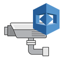

로딩 중...
로그인
{{ loginError }}

Amazon Rekognition Video Analyzer프레임 조회 설정을 불러오지 못했어요 ({{ configError }}). 촬영 기능은 사용할 수 있어요.
이미지 로드 실패: Network에서 S3 요청 상태코드를 확인하세요
이미지 URL 없음
{{new Date(frame.processed_timestamp * 1000).toString()}}
-
Detected objects
- {{label.Name}} ({{(Math.round((label.Confidence + 0.00001) * 100) / 100) + "%"}}) {{label.OnWatchList? "On Watch List -- ALERT!" : ""}}
(라벨 감지 비활성화됨)
Settings
촬영하기
상태: {{ captureStateLabel }}
전송 성공: {{ sentCount }} / 실패: {{ failedCount }}
남은 시간: {{ remainingSeconds }}s
마지막 전송: {{ lastSentAt }}
마지막 에러: {{ lastError }}
Autoload
얼굴 비교
기준 얼굴 이미지 업로드 (JPG/PNG, 최대 4MB)
비교 중...
{{ faceCompareResult.matched ? "✔ 일치 (threshold 통과)" : "✘ 불일치 (threshold 미달)" }}
유사도: {{ faceCompareResult.similarity }}% (임계값 {{ faceCompareResult.threshold }}%)
최신 프레임 key: {{ faceCompareResult.target.frame_s3_key }}
프레임 시각: {{ frameTime(faceCompareResult.target) }}
프레임 나이: {{ faceCompareResult.age_seconds }}s
비교 실패: {{ reasonText(faceCompareResult.reason) }}
오류: {{ faceCompareError }}